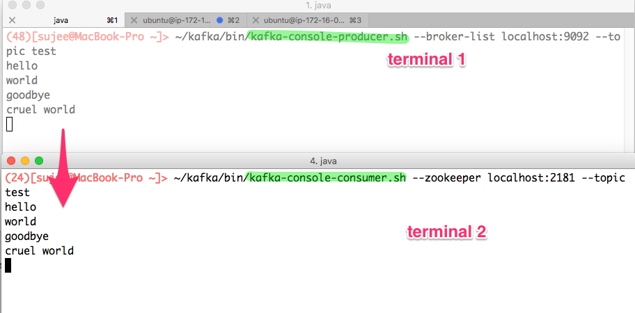

Use Kafka Command line utils
None
10 mins
--bootstrap-server or --zookeeperThe older version of Kafka commands used -zookeeper
flag.
For example:
$ ~/apps/kafka/bin/kafka-topics.sh \
--zookeeper localhost:2181 --listIn newer clients, --zookeeper flag is being replaced by
--bootstrap-server option
$ ~/apps/kafka/bin/kafka-topics.sh \
--bootstrap-server localhost:9092 --listSo going forward please use --bootstrap-server
option
Option 1 : Use Jupyter Labs and open two terminals ( File –>
New –> Terminal)
You can drag the terminal tab to order them
Option 2 : Open multiple SSH terminals using Putty or equivalent
Inspect current topics
$ ~/apps/kafka/bin/kafka-topics.sh \
--bootstrap-server localhost:9092 --listLet’s create a test topic
$ ~/apps/kafka/bin/kafka-topics.sh --bootstrap-server localhost:9092 \
--create --topic test --replication-factor 1 --partitions 2Verify:
$ ~/apps/kafka/bin/kafka-topics.sh \
--bootstrap-server localhost:9092 --listDescribe the topic
$ ~/apps/kafka/bin/kafka-topics.sh --bootstrap-server localhost:9092 \
--describe --topic test
Create a new topic test2 with 10 partitions from KM
See screenshots below

On terminal-1 start kafka-console-producer
$ ~/apps/kafka/bin/kafka-console-producer.sh \
--bootstrap-server localhost:9092 --topic testOn terminal-2 start kafka-console-consumer
$ ~/apps/kafka/bin/kafka-console-consumer.sh \
--bootstrap-server localhost:9092 --topic test==> In producer terminal (1) type some data
==> Watch the output on consumer terminal (2)
Click on the image to see larger version. 
Stop the consumer using Ctrl+c.
==> Start consumer with from-beginning
flag
$ ~/apps/kafka/bin/kafka-console-consumer.sh \
--bootstrap-server localhost:9092 --topic test --from-beginning=> Is the consumer reading the data ‘in-order’ as we typed in producer terminal? Why or why not?
Invoke console-producer and
console-consumer without any arguments to find out all the
options.
$ ~/apps/kafka/bin/kafka-console-producer.sh
$ ~/apps/kafka/bin/kafka-console-consumer.shTry this:
You need to specify topic, partition and
offset
$ ~/apps/kafka/bin/kafka-console-consumer.sh --bootstrap-server localhost:9092 \
--topic test --partition 1 --offset 2 Play around with different parameters
{kind=link}